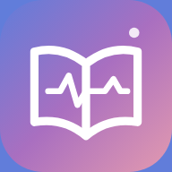

Medicina en tu iPhone
Guías incluidas, cuestionarios, tareas, retos y progreso disponibles sin internet cuando termine la descarga.
No necesitas cable, AltStore ni modo desarrollador.
Las notas y tareas se guardan en este dispositivo.
Libros y páginas externas, búsquedas académicas y actualizaciones. Los recordatorios nativos del teléfono no están disponibles en esta versión.
El progreso de la app nativa anterior no se transfiere automáticamente. No la borres si necesitas conservarlo.